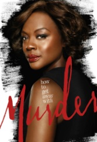
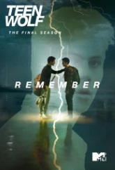

13 Reasons why
Un garçon nommé Clay reçoit une boîte à chaussures remplies de cassettes de sa défunte petite-amie Hannah, récemment suicidée. Sur les cassettes qui doivent être passées de mains en mains, Hannah explique que chacun a joué un rôle dans sa mort, et donne les 13 raisons expliquant son passage à l'acte.
En savoir plus

Gossip girl
La vie de la jeunesse dorée des élèves de deux écoles privées new-yorkaises, vue à travers les yeux ironiques d'une mystérieuse "bloggeuse", Gossip Girl. Entre amour et amitié, chacun tente de tirer son épingle du jeu, mais rien n'est jamais simple derrière des apparences paradisiaques...
En savoir plus
Mr. Robot
Elliot est un programmeur anti-social qui souffre d'un trouble du comportement et de dépression chronique. Ingénieur en cyber-sécurité le jour et hacker justicier la nuit. Il doit faire un choix quand le mystérieux chef d'un groupe de hackers le recrute pour détruire la société qu'il est payé pour protéger.
En savoir plus

How to Get Away with Murder
Annalise Keating possède toutes les qualités requises chez un professeur de droit pénal. Brillante, passionnée et créative, elle symbolise également tout ce à quoi on ne s'attend pas : sexy, imprévisible et dangereuse. Chaque année, elle sélectionne un groupe d’élèves, qui se révèlent être les plus intelligents et les plus prometteurs, à venir travailler dans son cabinet. Ils sont pret a tout pour apprendre auprès d’Annalise c'est l'occasion d'une vie, celle qui peut tout changer pour ces étudiants.
En savoir plus
Pretty little liars
Un an après la mystérieuse disparition d'Alison, la fille la plus odieuse et populaire du lycée, ses quatre meilleures amies Aria, Hanna, Spencer et Emily commencent à recevoir des messages, signés "-A", concernant des secrets que seule Alison connaissaient. Paniquées, les quatre filles se retrouve piégées dans un jeu sans fin. Elles vont chercher à découvrir qui est derrière tout ça tout en gerant amour, scolarité et désillution. Malheureusement à cause de leurs harceleur leurs recherches ne sera pas de tout repos.
En savoir plus

Teen Wolf
Scott est un adolescent tout ce qu'il y a de plus ordinaire. Un soir, son meilleur ami Stiles le convainc de suivre en cachette les recherches de la police pour retrouver un corps dans les bois alentours. Au cours de cette expédition, il se retrouve nez à nez avec une bête étrange et particulièrement féroce. Il réchappe de peu à cette attaque et, chanceux, avec une seule blessure: une vilaine morsure. Le lendemain, Scott se sent bizarre. Sans qu'il le sache encore, sa vie vient de changer. Il est devenu un loup-garou...
En savoir plus